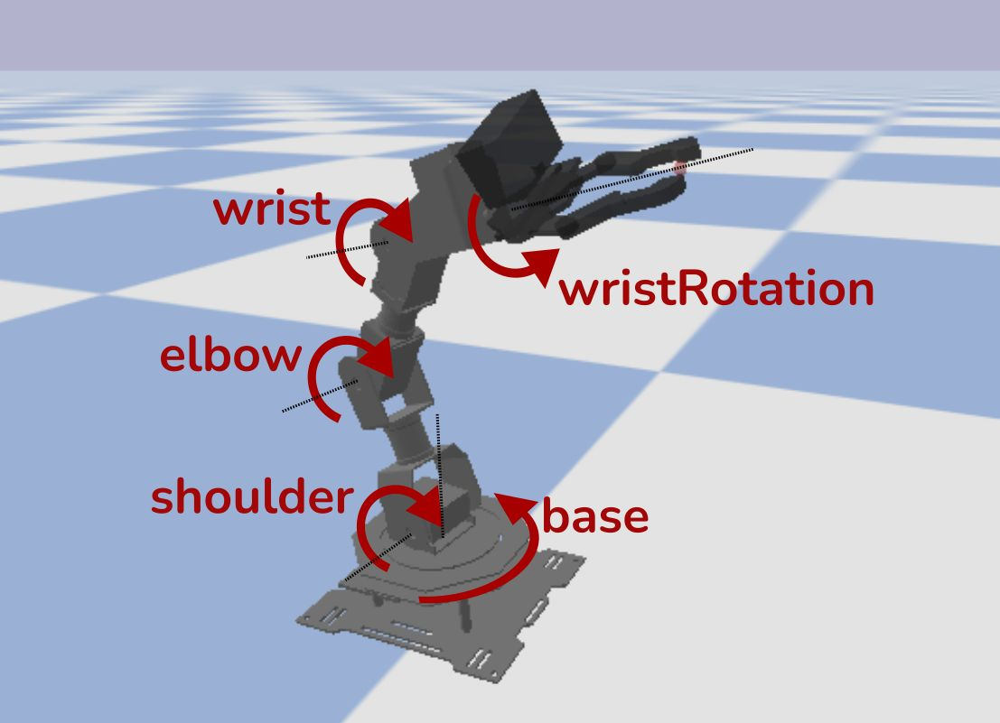

מה הייתם עושים עם זרוע AI שמחוברת ל-Chat GPT?
פורסם במקור ב LinkedIn
מה הייתם עושים עם זרוע AI שמחוברת ל-Chat GPT?
Hugging Face השיקה השבוע את SO-101 – זרוע רובוטית חכמה, מודפסת בתלת־ממד, שנמכרת ב־100 דולר בלבד.
מדובר בזרוע רובוטית פתוחה לתכנות (Open Source), שמבוססת על מנועים סטנדרטיים, מצלמת רשת פשוטה, ובקר מבוסס Raspberry Pi או Jetson Nano.
כלומר: כל מפתח, סטודנט או יזם יכול לקנות זרוע ולבנות עליה את הממשק החכם שלו - בקוד פתוח, במחיר נגיש, וללא צורך בציוד תעשייתי.
יחד עם הרכישה שלהם של חברת Pollen Robotics שיצרו את Reachy 2 - רובוט הומנואידי עם 2 זרועות, יכולת זיהוי חזותי, דיבור, וביצוע פיזי של משימות, Hugging Face מכריזה על כניסה חזקה לתחום הרובוטיקה, עם אותה גישה קהילתית שעשתה לה מהפכה ב-AI.
מה אפשר לעשות עם זה?
להפוך את GPT ל"מורה פרטי מוחשי": הדמות מדברת, הזרוע מצביעה על חפצים או כותבת על לוח.
ממשק עזר לקשישים או בעלי מוגבלויות – אדם אומר "תביא לי את הספר" והזרוע מגיבה.
לפתח אפליקציות קוליות שמשפיעות על העולם הפיזי.
וזה החלק המדהים: הזרוע היא רק חומרה.
זה פותח עולם שלם של הזדמנויות לכל אחד מאיתנו - איזה מודל יפעיל אותה? מה היא תבין? איך תחבר אותה לעולם האמיתי?
🎯 זו הזמנה לבנות, לנסות, להמציא. בדיוק כמו שקוד פתוח עשה ל-AI.
אתם גם לא באמת צריכים להבין בקוד שמפעיל אותה - פשוט בקשו מהצ׳אט לכתוב את הקוד
🔗 קישור לכתבה: https://lnkd.in/dy6Cdjgq
